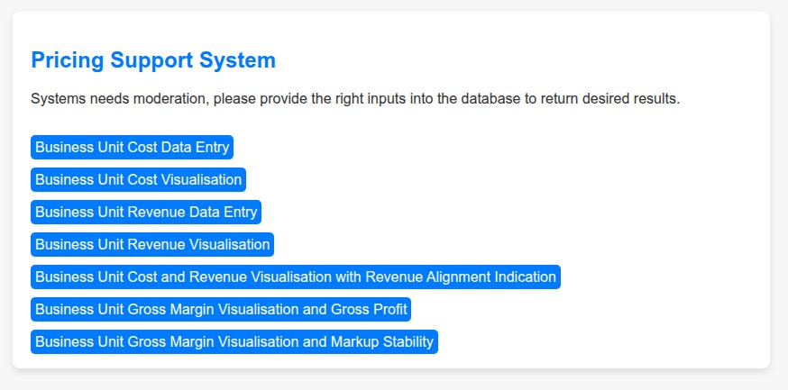
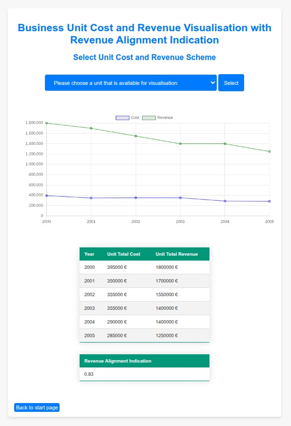
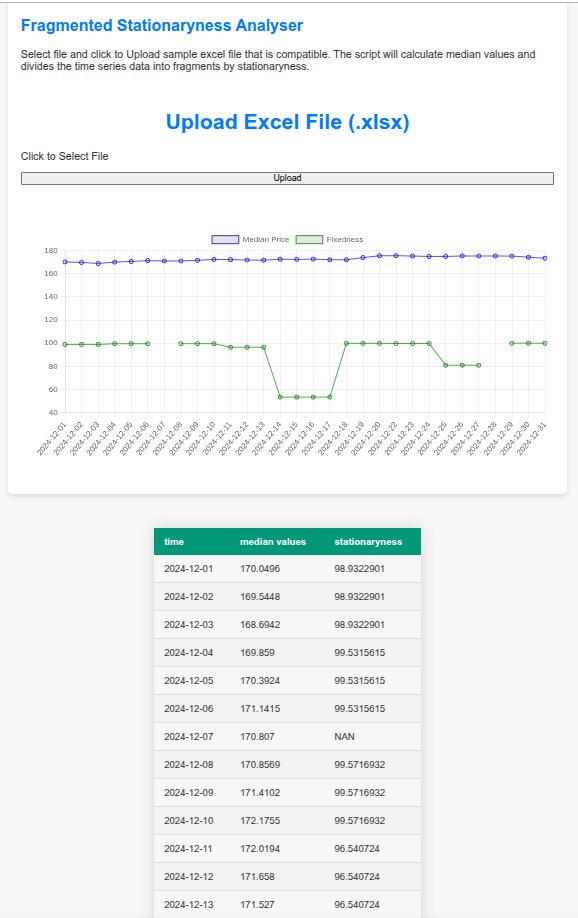
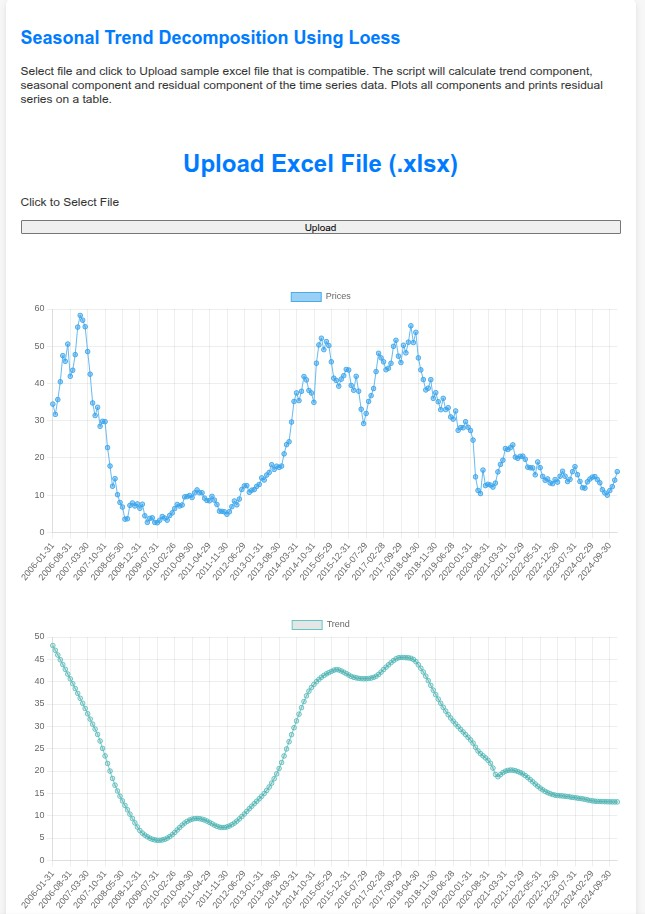
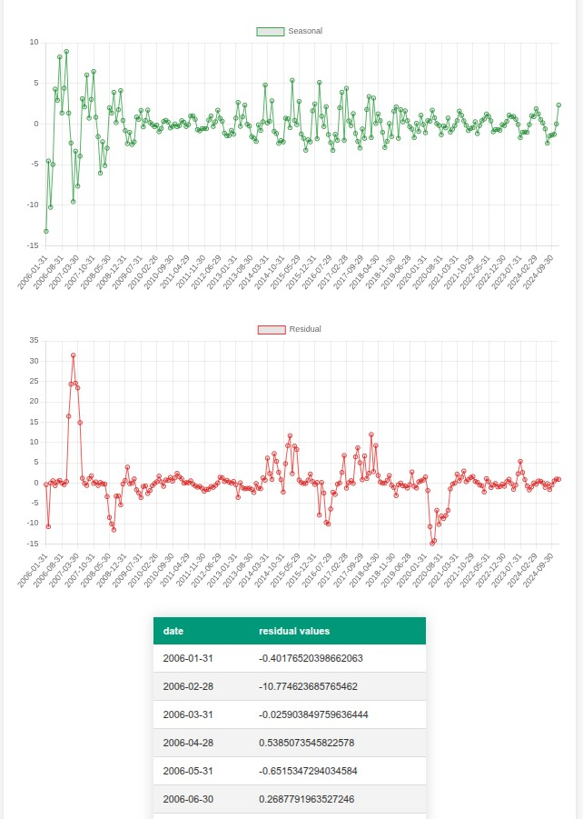

Python Flask application with Sqlite database to analyse cost and revenue data as a support system for pricing
continuous release #descriptive #diagnostic
This showcase of application is done to test how python flask framework works with sqlite database in a business application context. Each button is set to direct to related subpage for data entry and calculations. Calculations are done accordingly:
| Variable | Formulation |
|---|---|
| Revenue alignment | Pearson r correlation |
| Gross Margin | Gross Margin = 1 - (Cost / Revenue) |
| Gross Profit | Gross Profit = Revenue x Gross Margin |
| Mark Up | Mark Up = (Gross Profit / Cost) * 100 |
| Markup Stability | Inverse of ADFuller test |
An example set of data is provided as default setting inside the sqlite file to show example analysis. In this example analysis, to gain insight sampling is used. That is why, six years of sampling is done with different business divisions to analyse cost and revenue.

Chart.js worked well to present linecharts or multiline charts. Although the chart types were few, they were practical. Code optimisation isn't done on purpose, so that each route part can be just copiable.

Python Flask application that calculates stationaryness in fragments for stat arb
continuous release #descriptive #diagnostic
Fixedness in time series data is sought after for various reasons. However taking one time series data as a whole and applying one formulation as a measure could be misleading in longer terms. I have created a linear regression adaptation test, to detect parts of serial data is stationary or not. This detection is done by taking all combinations of data with all the starting points, calculating correlation of parts to it's own linear stripe. Then placing the absolute correlation results to the original serial data.
With the help of this methodology, a more detailed analysis will be attempted by dividing time series into portions and detecting the most steady parts in a time series data. This algorithm is specially useful in longer series where underlying structural changes are inevitable. Therefore, an overall look at stationaryness is more reliable.
On the web interface, which is made with python flask, financial time series data is uploadable as excel file format to calculate stationaryness in fragments. You could download the app and test with sample data to evaluate. You could also test the app with your own data with applicable format in different periods of time series data. Please refer to end of github readme.md to change variables and test.

Python Flask application that calculates seasonal trend decomposition using Loess from excel input
continuous release #descriptive #diagnostic
LOESS, is a method for smoothing a series of data in which less assumptions are made about the underlying structure of the data. LOESS uses local regression to fit a smooth curve through a scatterplot of data.
LOESS is one of the effective tools to detect outliers in the data.
On the web interface, which is made with python flask, financial time series data is uploadable as excel file format to calculate stationaryness in fragments. You could download the app and test with sample data to evaluate. You could also test the app with your own data with applicable data format in different periods of time series data. Please refer to end of github readme.md to change variables and test.

